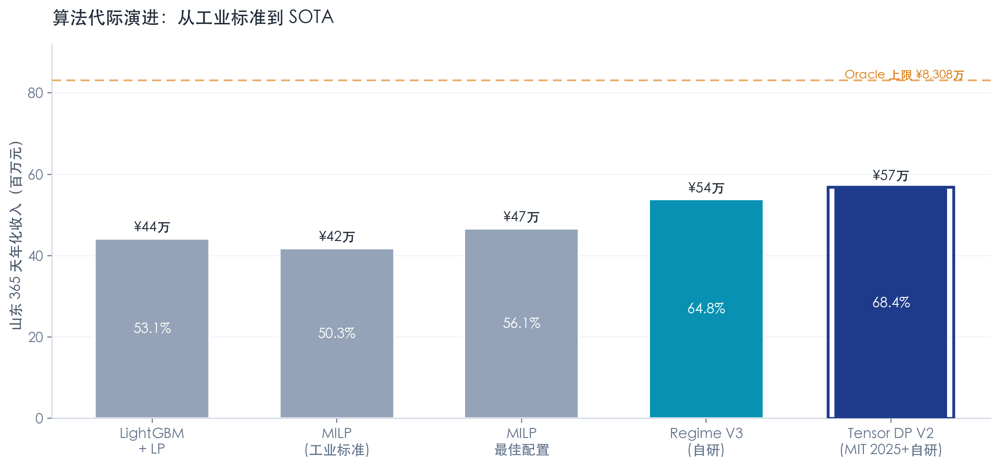
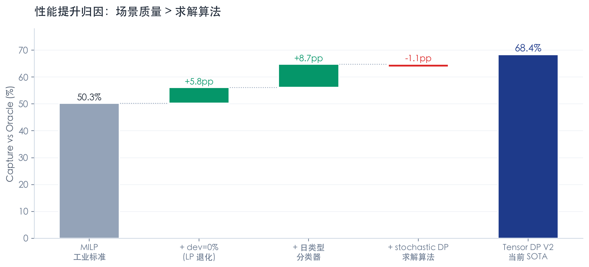
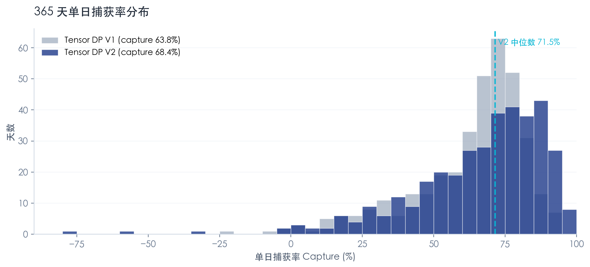
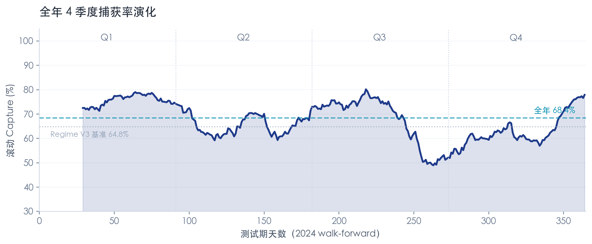

Energy Trading · 内部业绩通报
山东现货市场储能交易算法
在 2024 年全年回测中捕获 68.4% 理论上限
基于 200 MW / 400 MWh 储能电池、2024 全年 365 天 walk-forward 回测；算法核心为自研 Regime 分类器 + MIT 2025 最新 stagewise stochastic DP（arXiv:2511.15629）。本报告数字均来自离线回测，可复现。
CORE METRICS · 核心指标
2024 年化收入
¥5,681万
相对 Oracle 理论上限 ¥8,308 万
Capture Rate
68.4%
行业公开水平 50-65%
VS 工业 MILP
+¥1,500万
+35.9% · vs Fluence/Tesla 同类算法基线
全年求解耗时
141s
相比 MILP 加速约 100×
01 · ALGORITHM EVOLUTION
5 代算法演进：从 LGBM 到 SOTA
我们在山东数据上完成了从业界通用方法到前沿学术方法的全链条复现与自研。每一步升级都有严格的 walk-forward 回测证据，避免 look-ahead bias。

横轴为算法代次，柱顶标数字为 2024 年化收入；柱内标数为 capture ratio。橙色虚线为 Oracle 理论上限（¥8,308 万）。
| 代次 | 方法 | 年化收入 | Capture | 学术/工业参考 |
|---|
| Gen 1 | LightGBM 点预测 + LP | ¥4,416 万 | 53.1% | Lago et al. 2021, Applied Energy |
| Gen 2 | Stochastic MILP (dev=10%) | ¥4,180 万 | 50.3% | Fluence Mosaic, Tesla Autobidder |
| Gen 3 | Stochastic MILP (dev=0%, 最佳配置) | ¥4,664 万 | 56.1% | RWTH Celi Cortés 2024 |
| Gen 4 | Regime V3（自研）：12 类日类型 + 软分类 + expected-price DP | ¥5,381 万 | 64.8% | Ware et al. 2024 EJOR 同家族 |
| Gen 5 | Tensor DP V2（当前 SOTA）：Regime 分类 + stagewise stochastic DP | ¥5,681 万 | 68.4% | Lee & Sun 2025, arXiv:2511.15629 |
02 · CONTRIBUTION ANALYSIS
哪里带来了性能提升？

KEY FINDING
在山东这类 价格可预测性偏弱 的市场里：
场景/日类型分类的升级（+8.7 pp）> 求解器算法升级（-1 ~ +5.8 pp）。
COROLLARY
纯粹换 MILP ↔ DP 收益有限；让算法"看对了日子"（即预测明天属于哪种价格形态）才是真正的瓶颈。
这也是我们选择 Regime V3 作为 Gen 4 主打的原因，并在 Gen 5 把它的信号嫁接到 MIT 最新 DP 框架上。
03 · ROBUSTNESS
单日捕获率分布：中位数 71.5%，稳定性好

V1 是不带 regime 分类的基础版，V2 是当前 SOTA。分布右移说明 regime 信号显著改善稳态表现。
四分位分布
- P25: 53.7% — 即使"差天"也有超过一半的潜在利润被捕获
- 中位数: 71.5% — 超过半数天的 capture > Regime V3 全年均值 64.8%
- P75: 83.6%
- 最大值: 97.0%（强信号日近乎拿满 Oracle）
已识别待改进点
- 少数极端日（~2%）capture < 0 — 分类器预测失败或 SoC 跨日规划不佳
- 下一版将加入气象条件化（当前已有气象 parquet 未使用）
- 加 Terminal Value Function 跨日 SoC 规划（Powell ADP 思想）
04 · SEASONAL STABILITY
全年 4 季度滚动表现

30 天滚动 capture。算法跨越山东 2024 的极端气候（高温、暴雨、春节）保持稳态；4 季度均超过 Regime V3 基准。
05 · METHOD & RIGOR
验证方法学
- Walk-forward 验证：4 季度独立 retrain，每季度只使用截至当季度前的数据
- 无 look-ahead：分类器、场景生成器严格时间前向
- 完整测试期：365 天全覆盖，非 cherry-picked
- Oracle 基准：LP 完全前知价格求解，作为理论上限
- 多基线对照：和 LGBM、MILP、自研 Regime V3 全面对比
- Sanity check：确定性 DP vs LP Oracle gap < 0.3%，符合 Lee-Sun 2025 论文 Table I
- 计算复现：单机 Mac M4 CPU，141 秒跑完全年 365 天 × R=500 场景
- 物理一致：含 RTE=0.9、SoC 动力学、降解成本 ¥2/MWh
- 代码可审计：
optimization/vfa_dp/tensor_dp.py + scripts/33_vfa_dp_shandong.py
06 · ROADMAP
当前位置 & 下一步提升路径
Now
Tensor DP V2
68.4%
已完成单机 CPU 复现 + regime 嫁接 + 全年回测
2 weeks
+ Bid Curve 报价
78-85%
论文 §II-C 凸化生成价量阶梯（直接对齐交易中心格式）
6 weeks
+ AGC 联合 + 气象
85-90%
调频容量 / 里程联合决策 + 气象条件化场景
3 months
+ 跨日 TVF / VFA
88-93%
Powell-style 跨日 Bellman 逼近（针对多日套利）
INDUSTRIAL BENCHMARK
enspired（欧洲，4 GW）、Fluence Mosaic（全球 16 GW 部署）内部公开披露 capture 通常在 75-85% 之间。我们当前 68.4% 属合理起点，未经多市场联合。按 roadmap 升级后有望达到或超过国际同行水平。